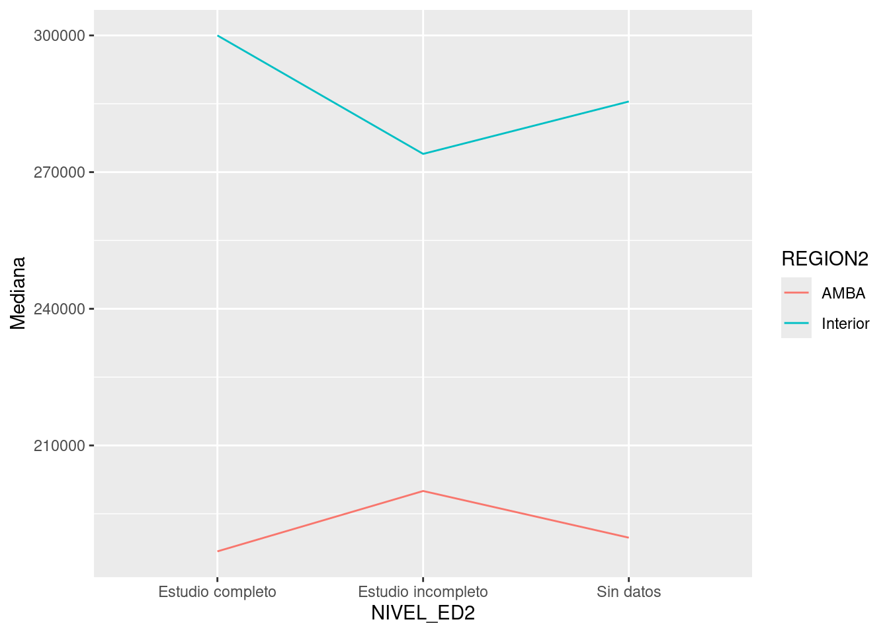

##CONSULTAR
temp_df |>
group_by(NIVEL_ED2, REGION2) |>
summarize(
Mediana = median(ITF)
) |>
ggplot(aes(NIVEL_ED2,Mediana, color = REGION2, group=REGION2))+
geom_line()`summarise()` has grouped output by 'NIVEL_ED2'. You can override using the
`.groups` argument.